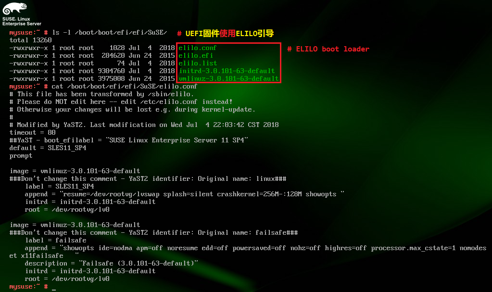
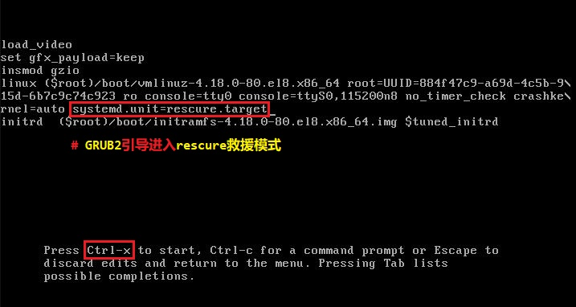
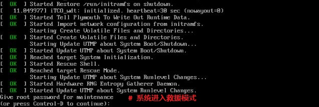

第十章 控制启动过程
目标：
- 管理启动过程，以控制所提供的服务并对问题进行故障排除和修复。
章节：
- 选择启动目标
- 重置root密码
- 修复在启动时出现的文件系统问题
第一节：选择启动目标
目标：
- 完成本节后，学生应该能：
- 说明RHEL启动过程。
- 设置启动时使用的默认目标。
- 将系统启动到非默认目标。
RHEL 8的启动过程：BIOS固件引导为例
- 计算机通电（加电启动）
- 系统固件（UEFI或BIOS）开机自检（POST），并初始化部分硬件。
- 系统固件搜索可启动设备，可能在UEFI启动固件中配置，也可能在BIOS中配置的磁盘主启动
记录（MBR）。
- 系统固件从磁盘读取 boot loader（启动加载器），然后将系统控制权交给boot loader。
- RHEL 8中，boot loader为 GRand Unified Bootloader version 2（GRUB2）。
- 使用 grub2-install 命令进行配置，它将安装GRUB2作为磁盘上的boot loader。
* 注意：SLES中支持ELILO boot loader（该boot loader不及GRUB2流行）

- GRUB2基于/boot/grub2/grub.cfg文件显示菜单，从中选择要启动的内核。
* 注意：
1. grub2-mkconfig 命令使用 /etc/grub.d/ 目录、/etc/default/grub 文件进行配置，
生成 /boot/grub2/grub.cfg 文件。
2. UEFI固件使用GRUB2时，GRUB2配置文件位于 /boot/efi/EFI/redhat/ 目录中。

- 选择内核或超时到期后，boot loader会从磁盘中加载 kernel 和 initramfs，放入内存中。
* 注意：
1. initramfs是一个存档（archive），其中包含启动时所有必要硬件的内核模块（驱动）、
初始化脚本等等。
2. 在RHEL 8中，initramfs包含自身可用的整个系统。
3. 使用 /etc/dracut.conf.d/ 目录、dracut 命令和 lsinitrd 命令进行配置，以检查
initramfs文件。
- boot loader将控制权交给kernel，传递boot loader的内核选项，及initramfs内核会初始化
initramfs中含有驱动的所有硬件，initramfs中的 /sbin/init 以 PID 1 启动。
- 在RHEL 8中，/sbin/init是一个指向systemd的软链接。

- 使用内核 init= 命令行参数进行配置。
- initramfs中的systemd会执行 initrd.target 中所有单元（unit）。
- 这包括将磁盘上的根文件系统挂载到/sysroot目录。
- 使用/etc/fstab进行配置。
- kernel 将根文件系统从initramfs切换（回转）到/sysroot的根文件系统。
- 随后，systemd使用磁盘中的systemd来自行重新执行。
- systemd会查找系统默认目标，然后启动（或停止）单元。
- 以符合该目标的配置，从而自动解决单元间的依赖关系。
- 本质上，systemd目标是一组系统应激活以达到所需状态的单元。
- 这些目标通常启动一个基于文本的登录或图形登录屏幕。
- 使用 /etc/systemd/system/default.target 和 /etc/systemd/system/ 进行配置。
* 注意：
1. RHEL 7/8系统启动过程示意（BIOS固件）：

2. RHEL 5/6系统启动过程示意（BIOS固件）：

3. 常见引导方式与磁盘分区类型：
a. BIOS固件使用GRUB2引导：系统磁盘使用MBR分区，数据磁盘使用MBR或GPT分区均可。
b. UEFI固件使用GRUB2引导：系统磁盘使用GPT分区，数据磁盘使用MBR或GPT分区均可。
4. 常见物理服务器系统启动示例：HPE DL560 Gen10


系统重启和关机：
- $ systemctl poweroff
# 停止所有运行的服务，卸载所有文件系统（或在文件系统无法卸载时以只读形式重新挂载），
然后关闭系统。
- $ systemctl reboot
# 停止所有运行的服务，卸载所有文件系统，然后重新启动系统。
- 也可以使用poweroff和reboot，它们是systemctl软链接。
选择systemd目标：
- systemd目标是一组系统应启动以达到所需状态的systemd单元。

- 某个目标可能属于另一目标，如，graphical.target 包含 multi-user.target，后者反过来
取决于 basic.target 和其他目标。
- $ systemctl list-dependencies graphical.target | grep target
# 查看graphical.target的依赖目标（正向依赖）

- $ systemctl list-unit --type=target --all
# 查看系统中所有的目标（active与inactive）

在运行时切换目标：
- 在运行的系统中，管理员可以使用 systemctl isolate 命令来切换到其他目标。
- $ systemctl isolate <target_name>.target

- 隔离某个目标会停止该目标（及其依赖项）不需要的所有服务，并启动任何尚未启动的所需服务。
- 并非所有目标都能隔离。
- 只能隔离单元文件中设置 AllowIsolate=yes 的目标。
- 如，可以隔离 graphical.target，但不能隔离 cryptsetup.target。


设置默认目标：
- 系统启动时，systemd会激活 default.target 目标。
- 通常，/etc/systemd/system/ 中的默认目标是指向 graphical.target 或 multi-user.target
的符号链接。
- $ systemctl get-default
# 查看系统默认目标
- $ systemctl set-default multi-user.target
$ systemctl set-default graphical.target
# 设置系统默认目标

在启动时选择其他目标：
- 如下所示：



* 注意：
1. $ man 7 bootup：查看系统引导启动的详细过程
2. $ man 7 dracut.bootup：查看initramfs中的引导过程
练习 P281：SELECTING THE BOOT TARGET
第二节：重置root密码
目标：
- 完成本节后，学生应该能在当前root密码丢失的情况下登录系统并更改root密码。
从boot loader重置root密码：
- 在RHEL 6及更早的版本中，管理员可以将系统启动到 runlevel 1 以获得root提示符。
- 在RHEL 8计算机上与 runlevel 1 最接近的模拟是 emergency.target 和 rescue.target，
都需要root密码才能登录。
- 在RHEL 8中，可使initramfs运行的脚本在某些点暂停，进入root shell，用以重置丢失的
root密码。
- 要访问该root shell，如下所示：
1. 重新启动系统
2. 按任意键（Enter除外）中断boot loader倒计时
3. 将光标移至要启动的内核条目
4. 按 e 编辑选定的条目
5. 将光标移到内核命令行（以 linux 开头的行）
6. 输入 rd.break（root directory），利用该选项，系统从initramfs向实际系统移交
控制权前，系统将会中断。
7. 按 Ctrl+x 进行启动
8. 此时，系统会显示root shell，磁盘上的实际根文件系统会只读（ro）挂载到/sysroot，
需要将根文件系统更改为读/写（rw）。
* 注意：
1. 此时系统尚未启用SELinux，所创建的任何文件都没有SELinux上下文。
2. 确保所有未标记的文件（包括此时的/etc/shadow）在启动过程中都会重新获得标记。
3. 键入 exit 两次，第一个命令将退出chroot位置（实际的系统根文件系统/sysroot），
第二个命令将退出initramfs调试shell。
4. 此时，系统将继续进行启动，执行完整的SELinux重新标记，然后再次重新启动。

检查日志：
- 如果system journal在重启后持久保留，则可以使用journalctl工具来检查启动失败日志。
- 默认情况下，系统日志保存在 /run/log/journal 目录中，重启后将被删除。
- 要将日志存储在 /var/log/journal 目录中，可在 /etc/systemd/journald.conf 中将
Storage 参数设置为 persistent。

- 要检查上一次启动的日志，journalctl使用 -b 选项。
- 如果不使用任何参数，-b 选项将仅显示从上一次启动以来的消息。
- 如果参数为负数，则显示以前的启动的日志。
$ journalctl -b <id> -p <priority>：查看指定重启过程中相应等级的日志信息

修复systemd启动问题：
- 启用早期调试Shell：
1. 通过为 systemctl enable debug-shell.service 启用 debug-shell 服务，系统会于
启动序列早期在 TTY9（Ctrl + Alt + F9）上生成一个 root shell。
2. 该shell会自动作为 root 登录，管理员可以在操作系统仍在启动时对系统进行调试。
* 注意：
1. 在完成调试后，需要禁用 debug-shell.service 服务。
2. 该服务会使未经身份验证的 root shell 向任何拥有本地控制台访问权限的人员开放。
- 使用紧急情况和救援目标：
1. 通过从boot loader将 systemd.unit=rescue.target 或 systemd.unit=emergency.target
附加到内核命令行（传递内核参数），系统将生成救援或紧急情况shell，而不是正常启动。
2. 这两个shell都需要提供 root 密码。
3. 紧急情况目标使 root 文件系统以只读（ro）挂载，而救援目标会等待 sysinit.target 完成，
这样系统的更多部分会进行初始化，如日志记录服务或文件系统。
4. 此时root用户无法更改 /etc/fstab，直至驱动器以读写状态重新挂载（mount -o remount,rw /）
管理员可以使用这些shell来修复妨碍系统正常启动的任何问题。
5. 如，服务之间的依赖关系循环，或 /etc/fstab 中的错误条目。
6. 从这些shell退出后，系统会继续进行常规启动过程。
* 注意：进入系统启动root shell的场景
1. 破解root密码：boot loader内核参数添加 rd.bread
2. 进入紧急模式：boot loader内核参数添加 systemd.unit=emergency.target
3. 进入救援模式：boot loader内核参数添加 systemd.unit=rescure.target
识别阻塞作业：stuck jobs
- 在启动过程中，systemd会生成大量作业。
- 如果其中某些作业无法完成，则它们会妨碍其他作业运行。
- $ systemctl list-jobs
# 检查当前作业列表
- 所有列为 running 的作业都必须先完成，然后列为 waiting 的作业才可以继续。
* 注意：
$ man 7 kernel-command-line：查看内核命令行参数
$ man 7 dracut.cmdline：查看dracut kernel命令行选项

练习 P288：RESETTING THE ROOT PASSWORD
第三节：修复在启动时出现的文件系统问题
目标：
- 完成本节后，学生应该能手动修复让启动过程停止的文件系统配置或损坏问题。
诊断和修复文件系统问题：
- /etc/fstab中的错误和损坏的文件系统可能会阻止系统启动。
- 大多数情况下，systemd会降至需要提供root密码的紧急修复shell。
- 常见的文件系统问题：

- 在所有情况下，管理员还都可以使用 emergency.target 来诊断和修复问题，因为在显示
紧急shell之前，不会挂载任何文件系统。
* 注意：
1. 适应紧急shell解决文件系统问题时，别忘了在编辑 /etc/fstab 之后运行
systemctl daemon-reload。
2. 如果不重新加载，systemd可能会继续使用旧版本/etc/fstab。
练习 P292：REPAIRING FILE SYSTEM ISSUES AT BOOT
Lab P295：CONTROLLING THE BOOT PROCESS